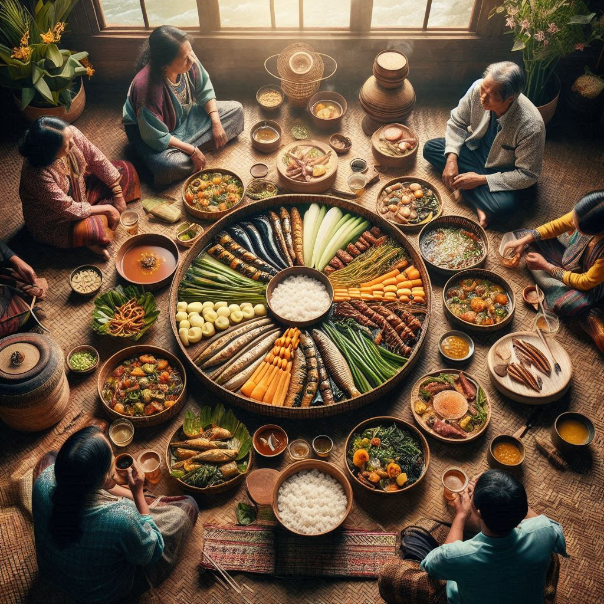
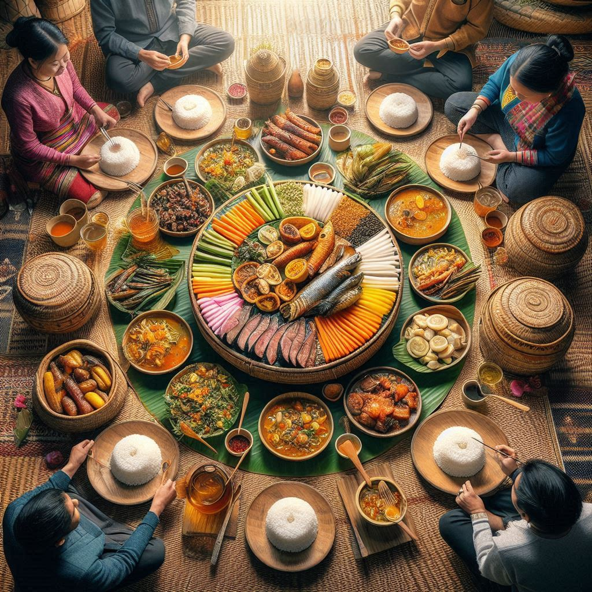

Mizo cuisine is known for its simplicity, use of fresh local ingredients, and a deep connection to the agricultural traditions of the region. The food is generally not overly spiced but emphasizes the natural flavors of the ingredients. Rice is the staple food in Mizoram, and pork, vegetables, and bamboo shoots are commonly used in various dishes. Here’s an overview of some of the most popular and traditional foods of Mizoram:
1. Rice (Bai)
- Bai is the staple food in Mizoram, typically served with a variety of side dishes. The Mizo people usually eat rice with vegetables, meat, and chutneys. It is often prepared plain, but it can also be mixed with different herbs and spices for added flavor.
2. Bai (Vegetable and Pork Stew)
- Bai is one of the most well-known dishes in Mizoram. It is a simple, comforting stew made from vegetables (often with bamboo shoots) and pork. The dish is typically flavored with salt, fermented fish, or dried fish and is served with plain rice. It's a dish commonly prepared for special occasions or festivals.
3. Vawksa (Smoked Pork)
- Vawksa is a popular Mizo dish made from smoked pork. The pork is smoked over a fire and then cooked with a variety of vegetables, sometimes including bamboo shoots or potatoes. The smokiness imparts a unique flavor to the dish, and it is often served with rice.
4. Mupui (Rice Cakes)
- Mupui are traditional Mizo rice cakes, often served as a snack or during festivals. They are made from rice flour and are steamed or sometimes fried. They are usually served with chutneys or curries and are a staple at Mizo feasts.
5. Snoh-Na (Pork Chutney)
- Snoh-Na is a spicy chutney made from minced pork, often mixed with ingredients like garlic, ginger, and green chilies. It’s a flavorful accompaniment to rice or other dishes, adding a tangy and savory element to meals.


6. Zu (Tea)
- Zu is the traditional drink of the Mizo people. It is typically a strong, sweet tea made from black tea leaves and sometimes flavored with spices. Mizo tea is consumed throughout the day, especially during social gatherings and festivals.
7. Pork with Bamboo Shoots (Bamboo Shoot Curry)
- Pork with Bamboo Shoots is a central part of Mizo cuisine, often cooked in a flavorful curry. The bamboo shoots add a tangy and slightly bitter taste, which complements the richness of the pork. This dish is served with rice and is a common feature at Mizo feasts.
8. Fermented Bamboo Shoot (Tungzang)
- Tungzang is a popular dish in Mizoram, made from fermented bamboo shoots. The fermentation process gives the bamboo shoots a distinctive, tangy flavor, which is used in various Mizo dishes. It is often cooked with vegetables, fish, or meat.
9. Khamteng (Mizo Fish Curry)
- Khamteng is a traditional Mizo fish curry made using freshwater fish, often cooked with bamboo shoots, herbs, and spices. It is a flavorful dish commonly eaten with rice and is enjoyed by the people of Mizoram.
10. Lalrua (Vegetable Salad)
- Lalrua is a simple vegetable salad often served as a side dish in Mizo meals. The salad typically consists of fresh, raw vegetables like cucumbers, tomatoes, and leafy greens, seasoned with salt and sometimes lemon juice or vinegar.
11. Chili Sauce
- Chili Sauce is commonly included in Mizo meals as a condiment. Made from fresh green chilies, garlic, and salt, this fiery sauce adds a spicy kick to rice and other dishes. It’s especially popular at feasts and during festivals.
12. Ahn (Steamed Fish)
- Ahn is a traditional dish made with freshwater fish, which is steamed and flavored with spices, bamboo shoots, and herbs. The fish used in this dish is typically fresh and sourced from the nearby rivers or lakes.
13. Khawm (Snacks)
- Khawm are a type of traditional Mizo snack, typically made from rice or flour, and often served with tea. These snacks can range from sweet to savory and are commonly enjoyed during festivals or social events.
14. Chhangban (Rice Dumplings)
- Chhangban are rice dumplings made from rice flour. They are often stuffed with a variety of fillings like meat, vegetables, or even sugar for sweet versions. These dumplings are steamed and can be served as a snack or dessert during festivals.
15. Mizo Pudding
- Mizo Pudding is a traditional sweet dish made from rice, sugar, and coconut milk, and sometimes flavored with dried fruits or nuts. It is a common dessert served during festivals and special occasions.
16. Mizo Wine (Zu)
- Zu can also refer to a traditional Mizo rice wine, a fermented beverage made from rice. This is typically consumed during festivals, celebrations, and social gatherings. It is brewed in a traditional manner, and it plays an important role in Mizo cultural rituals.
Common Ingredients in Mizo Cuisine
- Rice: The staple food in Mizoram, served with almost every meal.
- Pork: Pork is the most commonly used meat in Mizo cuisine, often used in stews, curries, and chutneys.
- Bamboo Shoots: Used in many dishes, bamboo shoots are an important ingredient in Mizo cuisine, adding both flavor and texture.
- Herbs and Spices: Mizo food is generally not very spicy but often includes simple ingredients like garlic, ginger, chilies, and fermented fish to enhance the flavor.
- Fermented Fish: Fish, especially when fermented, adds a distinctive flavor to many Mizo dishes, used in stews, curries, and chutneys.
Feasts and Special Occasions
- Feasts and Special Occasions: Mizo cuisine plays a crucial role during festivals like Chapchar Kut, Mim Kut, and Thalfavang Kut, where large feasts are prepared for family and community members. Traditional foods like Vawksa (smoked pork), Bai (vegetable and pork stew), and Mupui (rice cakes) are central to these celebrations. Each family contributes dishes, and the sharing of food is an important social activity.
Mizo cuisine reflects the region's agricultural lifestyle, with an emphasis on fresh, locally sourced ingredients. It is a blend of flavors—savory, sour, and spicy—but always simple and wholesome.